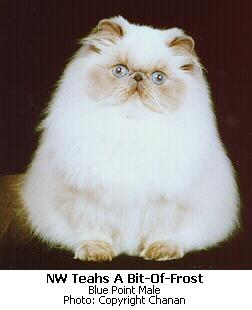

Himalayan Persia
Himalayan Persian, or Colourpoint Persian as it is commonly referred to in Europe), is a breed or sub-breed of long-haired cat similar in type to the Persian, with the exception of its blue eyes and its point colouration, which were derived from crossing the Persian with the Siamese. Some registries may classify the Himalayan as a long-haired sub-breed of Siamese, or a colorpoint sub-breed of Persian.
The Himalayan Persian cat is one of the most beloved of pedigreed cats. Enjoyed and appreciated by judges, pet owners and breeders, over 343,000 Himalayans have been registered since 1957. In 1998 there were 2,428 Himalayans shown; that is an average of 5.6 entries per show in kittens, championship and premiership. Himalayans have achieved over 41 national awards since 1981 and over 175 regional awards since 1992.
History
The Persian is a widely recognized and popular breed and formed the basis of the early hybridizations that resulted in the development of the Himalayan cat. The early evolution of the Persian most likely occurred on the high, cold plateaus of Persia (now Iran and Iraq). When these cats with a longer, silky coat were brought to Europe by the Phoenicians and the Romans, the Europeans were impressed. Over the years the Persian cat has been purposely bred to perpetuate and accentuate the longhair trait. . Work to develop the colorpoint Persian, or Himalayan, began in the U.S. around 1950. The genetics of the Siamese color were known to involve a single recessive color factor which produced both blue eye color and the colorpoint pattern. The colorpoint pattern (also referred to as the Himalayan or Siamese pattern) is caused by the Siamese gene, one of the genes in the albino series. All of the albino genes influence whether and where pigment will be deposited in an animal’s hair and skin. The effect of the Siamese gene is also impacted by the temperature of the skin. Pigment (color and pattern) is deposited in the hair at the coolest parts of the body, the parts that receive the least circulation: the extremities of the body feet, face, ears and tail. The first step in working toward a colorpoint Persian was to cross the Siamese and the Persian. This early work was followed by years of breeding the offspring to obtain a group of cats with long hair and the colorpoint pattern. The colorpoint longhairs were bred back to Persians, and their offspring were interbred. After many years breeders had cats with many of the basic Persian characteristics and colorpoint coloring. At this point, the next step in the work began – that of obtaining breed recognition from bona fide registry organizations.
In England, Brian Sterling-Webb perfected his long-haired colorpoint over a period of 10 years. In 1955 he approached the Governing Council of the Cat Fancy (GCCF) and requested recognition for this new variety of longhaired cat. Since he and other breeders were prepared to describe and defend the work that had gone into the development of this new color, recognition was granted and the Longhaired Colourpoint was accepted as a breed in England.
In North America, Mrs. Goforth applied for breed recognition at the CFA Annual Meeting held in Washington, DC on December 18, 1957. Mrs Goforth contended that although the Himalayan standard was identical to the Persian standard, the cat was not a Persian, but a new breed of longhair. With this philosophy as a basis for the Himalayan, these cats received recognition and were granted foundation record registration with CFA. The rules governing the acceptance of new breeds and colors at the time required breeders to show three generations of pure Himalayan colorpoint breedings in order to be eligible for championship competition.
Himalayan Today
Over the next ten years the Himalayan grew rapidly in popularity. The vast majority of Himalayans, however, failed to meet the breed standard, which called for Persian type. Many breeders had stopped using regular crossings to solid color Persians in their breeding programs. Instead, they were breeding existing colorpoint to colorpoint and as a result, the advancement of the Himalayan as a breed that met the Persian standard was small and, in many cases, not measureable. The Himalayan was becoming a long-nosed, colorpoint longhair.
In the 1970s Himalayan breeders began to look at and evaluate the goals that they were attempting to achieve. It was apparent to many that they needed to begin to work in earnest toward breeding cats that had better Persian type. To accomplish this, they began to outcross to Persians on a regular basis, and kept the best of the offspring to be used in their breeding programs. After a time, colorpoint longhairs with better Persian type began to appear in the show ring. These cats looked more like Persians, and as a result, were able to compete with Persians for those coveted final awards.
References- Newton, N., “The Himalayan – The Impossible Dream.” 1980 CFA Yearbook.
- Lamb, B., “Celebrating The Legacy – Renewing The Dream.” 1987 CFA Yearbook.
- Lamb, B., “The Himalayan Persian…And the Dream Goes On!” 1998 CFA Yearbook.
- Jacobberger, P., CFA Judge.